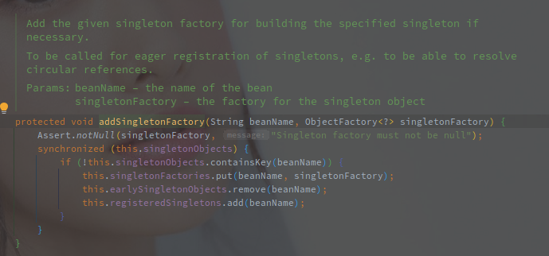
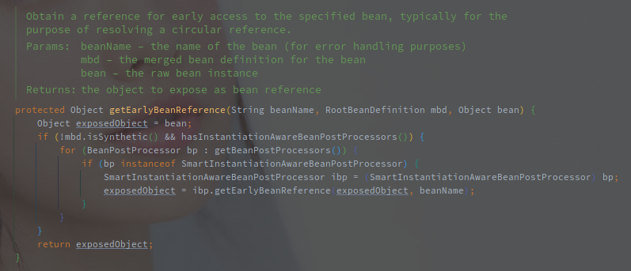
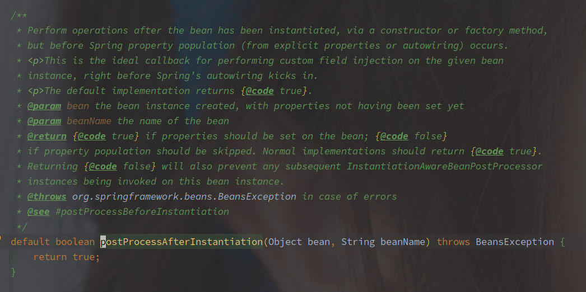

Spring 中 Bean 对象的创建流程
[TOC]
概述
Spring 将 Bean 对象的创建分为了两大块内容:
- 实例化 - 根据 BeanDefinition 创建具体的实例对象（BeanDefinition 是 Java 在读取配置后为每个定义的 Bean 创建的。
- 初始化 - 对创建的实例对象进行一系列的配置
在以上两个步骤中再穿插着各类 BeanPostProcessor 的调用，就组成了 Bean 对象基本的创建流程。
再细化的话还有属性填充，不过此处也可以归为 Bean 的初始化。
在 AbstractBeanFactory#getBean 的源码实现中，AbstractBeanFactory#createBean 被包装为 ObjectFactory 接口实现 ，作为核心的创建 Bean 实例的逻辑传入。
源码实现
// AbstractBeanFactory#createBean
protected Object createBean(String beanName, RootBeanDefinition mbd, @Nullable Object[] args)
throws BeanCreationException {
RootBeanDefinition mbdToUse = mbd;
// 解析出 Class 对象
Class<?> resolvedClass = resolveBeanClass(mbd, beanName);
// 塞回到 BeanDefinition
if (resolvedClass != null && !mbd.hasBeanClass() && mbd.getBeanClassName() != null) {
mbdToUse = new RootBeanDefinition(mbd);
mbdToUse.setBeanClass(resolvedClass);
}
// Prepare method overrides.
// 处理方法覆写（应该也没啥使用场景了
try {
mbdToUse.prepareMethodOverrides();
} catch (BeanDefinitionValidationException ex) {}
try {
// 调用 InstantiationAwareBeanPostProcessor#postProcessBeforeInstantiation 尝试自定义实例化
// 如果实例化成功，则跳过后续的流程，直接执行 BeanPostProcessor#postProcessAfterInitialization
Object bean = resolveBeforeInstantiation(beanName, mbdToUse);
// 创建成功则直接返回
if (bean != null) {
return bean;
}
} catch (Throwable ex) {}
try {
// 采用框架的实例化方法创建实例
Object beanInstance = doCreateBean(beanName, mbdToUse, args);
return beanInstance;
} catch (BeanCreationException | ImplicitlyAppearedSingletonException ex) {}
catch (Throwable ex) {}
}
以上是创建 Bean 实例的最上层代码。
解析 Class 对象
暂时忽略。
处理 Override 方法
方法的覆写已经没什么使用场景了，忽略吧。
执行前置实例化方法
这里是 Spring 提供的 Callback 方法，用于用户实现自定义的 Bean 创建。
前置化实例方法就是 InstantiationAwareBeanPostProcessor#postProcessBeforeInstantiation 是 Spring 框架中提供的一种钩子方法，供用户实现自定义的 Bean 实例化过程。

方法的逻辑如下：
- 执行 InstantiationAwareBeanPostProcessor#postProcessBeforeInstantiation 创建失败则直接返回
- 创建成功继续执行 BeanPostProcessor#postProcessAfterInitialization（后置初始化方法
即使是自定义的实例化，后置的初始化方法还是会执行的。
标题的前置实例化方法就是指 InstantiationAwareBeanPostProcessor#postProcessBeforeInstantiation，该方法用于自定义类的实例化过程。

该方法在对象实例化之前被调用，返回的结果可能是代理用来代替原始的 Bean，如果返回不为 NULL 的对象则可以跳过默认的实例化方式。
（可以和 SmartInstantiationAwareBeanPostProcessor 联合使用推断返回的类型。
AbstractAutoProxyCreator 实现了该方法，用于对有自定义 TargetSource 的类进行代理对象的创建。
而 BeanPostProcesspr#postProcessAfterInitialization 则是在初始化完毕之后调用的钩子方法。

在 Bean 初始化完毕之后调用（初始化例如 InitializingBean#afterPropertiesSet 以及自定义的 init-method），Bean 实例已经填充（populated）完毕，返回的 Bean 实例可能是包装了原始的 Bean。
在 FactoryBean 对象创建以及 FactoryBean 内部对象的创建都会被调用。
通过 InstantiationAwareBeanPostProcessor#postProcessBeforeInstantiation 也会被调用。
AbstractAutoProxyCreator 同样实现了该方法，用于代理对象的创建。
另外 ApplicationListenerDetector 实现了该方法，用于将 ApplicationListener 的 Bean 添加到 ApplicationContext。
之后就是框架提供了创建逻辑（框架会更具 BeanDefinition 来决定具体的创建和初始化方式。
doCreateBean - Spring 的 Bean 创建逻辑
// AbstractAutowireCapableBeanFactory#doCreateBean
protected Object doCreateBean(String beanName, RootBeanDefinition mbd, @Nullable Object[] args)
throws BeanCreationException {
// Instantiate the bean.
// Bean 的实例化
BeanWrapper instanceWrapper = null;
// 如果是单例，尝试从缓存中获取对象
if (mbd.isSingleton()) {
instanceWrapper = this.factoryBeanInstanceCache.remove(beanName);
}
// 执行实际的实例化方法
if (instanceWrapper == null) {
instanceWrapper = createBeanInstance(beanName, mbd, args);
}
// 获取到真实的 Bean 对象
Object bean = instanceWrapper.getWrappedInstance();
Class<?> beanType = instanceWrapper.getWrappedClass();
if (beanType != NullBean.class) {
mbd.resolvedTargetType = beanType;
}
// 调用 BeanDefinition 合并的后置处理器
synchronized (mbd.postProcessingLock) {
if (!mbd.postProcessed) {
try {
applyMergedBeanDefinitionPostProcessors(mbd, beanType, beanName);
} catch (Throwable ex) {}
mbd.postProcessed = true;
}
}
// Eagerly cache singletons to be able to resolve circular references
// even when triggered by lifecycle interfaces like BeanFactoryAware.
// 暴露早期引用，用于解决循环依赖问题
boolean earlySingletonExposure = (mbd.isSingleton() && this.allowCircularReferences && isSingletonCurrentlyInCreation(beanName));
if (earlySingletonExposure) {
addSingletonFactory(beanName, () -> getEarlyBeanReference(beanName, mbd, bean));
}
// Initialize the bean instance.
// 接下来就是初始化的逻辑
Object exposedObject = bean;
try {
// 填充属性
populateBean(beanName, mbd, instanceWrapper);
// 初始化
exposedObject = initializeBean(beanName, exposedObject, mbd);
}catch (Throwable ex) { }
if (earlySingletonExposure) {
Object earlySingletonReference = getSingleton(beanName, false);
if (earlySingletonReference != null) {
if (exposedObject == bean) {
exposedObject = earlySingletonReference;
} else if (!this.allowRawInjectionDespiteWrapping && hasDependentBean(beanName)) {
String[] dependentBeans = getDependentBeans(beanName);
Set<String> actualDependentBeans = new LinkedHashSet<>(dependentBeans.length);
for (String dependentBean : dependentBeans) {
if (!removeSingletonIfCreatedForTypeCheckOnly(dependentBean)) {
actualDependentBeans.add(dependentBean);
}
}
if (!actualDependentBeans.isEmpty()) {}
}
}
}
// Register bean as disposable.
// 注册注销时的钩子方法
try {
registerDisposableBeanIfNecessary(beanName, bean, mbd);
}
catch (BeanDefinitionValidationException ex) { }
return exposedObject;
}
（方法也是很长啊...
方法的简略流程如下：
- 实例化对象（对象会通过框架提供了的几种方法进行实例化
- 早期对象的提前暴露（没有完成属性填充和初始化的
- 填充实例属性
- 初始化实例对象
- 注册注销方法
一、实例化 Bean 对象
// AbstractAutowireCapableBeanFactory#createBeanInstance
protected BeanWrapper createBeanInstance(String beanName, RootBeanDefinition mbd, @Nullable Object[] args) {
// 重新获取 Class 对象，确保已经解析出可用的 Class 类
Class<?> beanClass = resolveBeanClass(mbd, beanName);
if (beanClass != null && !Modifier.isPublic(beanClass.getModifiers()) && !mbd.isNonPublicAccessAllowed()) {
// Bean 不能为空 || 类可修改 || 类允许访问非 public 的构造方法
}
// 1. 使用 Supplier 接口实例化
Supplier<?> instanceSupplier = mbd.getInstanceSupplier();
if (instanceSupplier != null) {
return obtainFromSupplier(instanceSupplier, beanName);
}
// 2. 使用工厂方法实例化（ FactoryMethod
if (mbd.getFactoryMethodName() != null) {
return instantiateUsingFactoryMethod(beanName, mbd, args);
}
// Shortcut when re-creating the same bean...
// 短路策略，使用缓存尝试跳过实例化之前的解析流程流程
boolean resolved = false;
boolean autowireNecessary = false;
if (args == null) {
synchronized (mbd.constructorArgumentLock) {
if (mbd.resolvedConstructorOrFactoryMethod != null) {
resolved = true;
autowireNecessary = mbd.constructorArgumentsResolved;
}
}
}
// 确定解析过该对象，则直接走实例化流程
if (resolved) {
if (autowireNecessary) {
return autowireConstructor(beanName, mbd, null, null);
} else {
return instantiateBean(beanName, mbd);
}
}
// 走到这里就是无缓存可用的场景了，需要当场创建
// Candidate constructors for autowiring?
// 使用 SmartInstantiationAwareBeanPostProcessor#determineCandidateConstructors 推断预备的构造函数
// Spring 默认提供的主要是 AutowiredAnnotationBeanPostProcessor，
// 会选择 Primary 或者 Autowired 标注的构造函数，如果仅仅只有一个构造函数也就直接选择
Constructor<?>[] ctors = determineConstructorsFromBeanPostProcessors(beanClass, beanName);
if (ctors != null || mbd.getResolvedAutowireMode() == AUTOWIRE_CONSTRUCTOR ||
mbd.hasConstructorArgumentValues() || !ObjectUtils.isEmpty(args)) {
return autowireConstructor(beanName, mbd, ctors, args);
}
// Preferred constructors for default construction?
// 获取首选的构造函数
ctors = mbd.getPreferredConstructors();
if (ctors != null) {
return autowireConstructor(beanName, mbd, ctors, null);
}
// No special handling: simply use no-arg constructor.
// 使用无参构造函数
return instantiateBean(beanName, mbd);
}
官方提供的实例化方法有如下几种：
- Supplier 接口
- FactoryMethod 方法
- 含参构造函数
- 无参构造函数
Supplier 接口的形式好像已经过时了。
FactoryMethod 的方式最常见的就是 @Bean 注解用于方法时，类似如下的声明：
@Configuration
public class ConfigClass{
@Bean
public String name(){
return "chenqwwq";
}
}
以上的形式解析之后方法是以 FactoryMethod 的形式保存在 BeanDefinition 中的，并且如果方法中带有参数会自动装配。
AutowiredAnnotationBeanPostProcessor - 构造函数的选择
基本的构造选择逻辑如下：
优先选择 Supplier，然后是 FactoryMethod，如果不存在则使用构造函数创建。
构造函数的选择上，如果只有一个构造函数就不用选，如果存在多个优先选择 @Autowired(required=true) 标注的，之后选择 @Autowired(required=false) 的，存在多个非必要的构造函数则选择能满足其参数依赖的。
@Autowired(required=true) 和 @Autowired(required=false) 不能同时存在。
二、 执行 postProcessMergedBeanDefinition 方法
该方法在实例化之后，填充数据和初始化之前的执行。

方法入参中包含 BeanDefinition 以及 Class 对象和名称，不包含实例化之后的 Bean 对象，所以该方法仅仅是对 BeanDefinition 的后置处理，而非 Bean。
实现该方法的有如下几个类：
- AutowiredAnnotationBeanPostProcessor
- InitDestroyAnnotationBeanPostProcessor
- CommonAnnotationBeanPostProcessor（该类继承了 InitDestroyAnnotationBeanPostProcessor
AutowiredAnnotationBeanPostProcessor - 构造函数的选择
AutowiredAnnotationBeanPostProcessor 的调用就是查找所有自动注入的属性或者方法，已备后续使用。
CommonAnnotationBeanPostProcessor 和 AutowiredAnnotationBeanPostProcessor 就是解析的注解的不同，前者解析的 @Resource，后者解析的 @Autowired 等。
解析出来的 InjectionMetadata 会在当前类中留有缓存。
InitDestroyAnnotationBeanPostProcessor 解析的则是类中生命周期相关的注解，默认是 @PostConstruct 和 @PreDestroy，最终的解析结果保存为 LifecycleMetadata。
三、暴露早期引用

暴露早期引用就是将实例化完毕但是未初始化的对象通过 ObejectFactory 的形式添加到缓存 singletonFactories 中。
在 doGetBean() 的时候，该缓存属于第三级缓存，调用 getObejct() 获取的方法会直接塞到 earlySingletonObjects 缓存中。

暴露早期引用的问题是为了解决循环依赖的问题。
在此之前的循环依赖都无法解决，例如在实例化时，构造函数的参数中包含循环依赖的对象。
暴露早期引用，之后 Bean 对象继续进行后续的创建，如果有别的对象实例化或者填充属性时需要获取该对象，则直接从缓存中获取。
这里就涉及到代理的问题，此时保存到对象为真实对象没有代理层包裹，和最终的对象可能不同，这就是 getEarlyBeanReference() 方法需要处理的问题。

getEarlyBeanReference() 方法中就是遍历调用所有的 SmartInstantiationAwareBeanPostProcessor#getEarlyBeanReference() 方法。
如果是需要代理的实例对象，在该方法中就该返回代理对象。
四、属性填充
protected void populateBean(String beanName, RootBeanDefinition mbd, @Nullable BeanWrapper bw) {
if (bw == null) {
return;
}
// 执行实例化后置的狗子方法
// InstantiationAwareBeanPostProcessor#postProcessAfterInstantiation
if (!mbd.isSynthetic() && hasInstantiationAwareBeanPostProcessors()) {
for (BeanPostProcessor bp : getBeanPostProcessors()) {
if (bp instanceof InstantiationAwareBeanPostProcessor) {
InstantiationAwareBeanPostProcessor ibp = (InstantiationAwareBeanPostProcessor) bp;
if (!ibp.postProcessAfterInstantiation(bw.getWrappedInstance(), beanName)) {
return;
}
}
}
}
// PropertyValues 持有一个或者多个 PropertyValue
// BeanDefinition 里面的 PropertyValues 指的是已经解析出来的属性，后续的属性填充会从里面获取数据
PropertyValues pvs = (mbd.hasPropertyValues() ? mbd.getPropertyValues() : null);
// 自动注入的模式
// 在声明为 Bean 对象的时候可以指定，例如 @Bean 的 autowired 属性
// 该种方法基本已经过时
int resolvedAutowireMode = mbd.getResolvedAutowireMode();
// 根据解析的注入模式，遍历 PropertyValues，分别使用 name 和 type 两种形式查找依赖对象
if (resolvedAutowireMode == AUTOWIRE_BY_NAME || resolvedAutowireMode == AUTOWIRE_BY_TYPE) {
MutablePropertyValues newPvs = new MutablePropertyValues(pvs);
// byName
if (resolvedAutowireMode == AUTOWIRE_BY_NAME) {
autowireByName(beanName, mbd, bw, newPvs);
}
// byType
if (resolvedAutowireMode == AUTOWIRE_BY_TYPE) {
autowireByType(beanName, mbd, bw, newPvs);
}
pvs = newPvs;
}
// 以下是使用 BeanPostProcessor 完成的注入形式
// 主要参考的还是 AutowiredAnnotationBeanPostProcessor 和 CommonAnnotationBeanPostProcessor
boolean hasInstAwareBpps = hasInstantiationAwareBeanPostProcessors();
// 是否需要检查依赖
boolean needsDepCheck = (mbd.getDependencyCheck() != AbstractBeanDefinition.DEPENDENCY_CHECK_NONE);
PropertyDescriptor[] filteredPds = null;
if (hasInstAwareBpps) {
// 重新获取一遍，pvs 保存的是已经解析的依赖
if (pvs == null) {
pvs = mbd.getPropertyValues();
}
// 遍历执行各类钩子方法
// 1、InstantiationAwareBeanPostProcessor#postProcessProperties
// 2、InstantiationAwareBeanPostProcessor#postProcessPropertyValues
for (BeanPostProcessor bp : getBeanPostProcessors()) {
if (bp instanceof InstantiationAwareBeanPostProcessor) {
InstantiationAwareBeanPostProcessor ibp = (InstantiationAwareBeanPostProcessor) bp;
// 调用 InstantiationAwareBeanPostProcessor#postProcessProperties
PropertyValues pvsToUse = ibp.postProcessProperties(pvs, bw.getWrappedInstance(), beanName);
// 为空，表示没有获取到具体的依赖
if (pvsToUse == null) {
if (filteredPds == null) {
// 从 BeanWrapper 中获取依赖，已经过滤可以忽略的依赖
filteredPds = filterPropertyDescriptorsForDependencyCheck(bw, mbd.allowCaching);
}
// 执行 InstantiationAwareBeanPostProcessor#postProcessPropertyValues
// 不包含依赖
pvsToUse = ibp.postProcessPropertyValues(pvs, filteredPds, bw.getWrappedInstance(), beanName);
// 不需要注入则直接诶返回
if (pvsToUse == null) {
return;
}
}
pvs = pvsToUse;
}
}
}
if (needsDepCheck) {
if (filteredPds == null) {
// 从 BeanWrapper 中获取依赖，已经过滤可以忽略的依赖
filteredPds = filterPropertyDescriptorsForDependencyCheck(bw, mbd.allowCaching);
}
checkDependencies(beanName, mbd, filteredPds, pvs);
}
if (pvs != null) {
applyPropertyValues(beanName, mbd, bw, pvs);
}
}
该方法大类的逻辑如下：
- 执行实例化后置的钩子方法（不同于 MergedBeanDefinition 的那个方法，该方法主要针对于 Bean 对象
- 根据指定的自动注入模式，解析依赖（这里是 Spring 官方提供的注入模式，就是 byName / byType 从容器中捞对象
- 调用属性配置等相关钩子方法（调用的是 BeanPostProcessor 的相关方法，相对扩展的注入模式，和上者一样解析的结果存入 pvs
- 检查依赖（不满足就退出，不啰嗦
- 填充属性值（将 PropertyValues 中的属性应用到 Bean 对象中
属性注入和 Bean 的创建一样有允许使用者自定义的部分。
Bean 的创建可以通过 实例化前置钩子方法，也可以通过 FactoryBean，而属性注入则是通过钩子方法。
属性填充的第一步就是调用实例化的后置钩子方法。

该方法的调用时机和 MergedBeanDefinitionPostProcessor#postProcessMergedBeanDefinition 基本一致，区别就在于入参。
当前方法以 Bean 对象为主要入参，用于在实例化之后对对象进行修改，而 Merged 则是以 BeanDefinition 作为主要入参，修改的也是 BeanDefinition。
该方法没有默认的实现（基础的 Spring core 部分咩由。
然后是根据 Bean 的定义进行筛查。
（不确定这里 Bean 的 autowired 属性什么时候修改的，如果是使用 @Bean 定义的，则是在 @Bean(autowire=) 中指定，默认是 Autowire.NO。
按照名称注入的实现如下（类型的也差不多。
protected void autowireByName(String beanName, AbstractBeanDefinition mbd, BeanWrapper bw, MutablePropertyValues pvs) {
// 查找所有未满足的 Property
// 就是在 PropertyValues 中不存在的属性，根据属性的名称来
String[] propertyNames = unsatisfiedNonSimpleProperties(mbd, bw);
// 按照名称遍历获取
for (String propertyName : propertyNames) {
// 是否包含该 Bean（当前类就是 BeanFactory，直接判断当前容器是否包含
if (containsBean(propertyName)) {
// 有就获取
Object bean = getBean(propertyName);
// 添加到 PropertyValues 对象中
pvs.add(propertyName, bean);
} else {// log }
}
}
查找到的对象添加到 外层传入的 pvs 参数（做一个收集，后续还会有自定义的解析，结果也会存入该对象。
妈的，真的太多了，先暂停一下吧。（20211123
总结
对象的创建可以细分为实例化，属性填充，初始化三个流程。
实例化的方法有如下几种：
- Supplier
- FactoryMethod
- 构造函数（用户可以通过 BeanPostProcessor 决定使用的构造函数
属性填充的流程有如下几种方式：
- 根据 Property 直接从容器中捞取
- 通过 BeanPostProcessor 自定义获取途径（官方也有 Autowired 等默认的实现，不过这里也是一个扩展点。